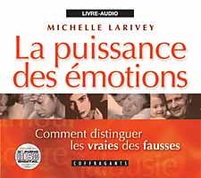

|
en livre-audio ISBN : 2-89558-109-6 |
Ressources en Développement :
Le site de l'Auto-développement
Une approche du courant humaniste

Les éditions de l'Homme, 2002 ISBN 2-7619-1702-2 334 pages, 26.95 $can |
Comment distinguer les vraies des fausses Par Michelle Larivey psychologue Préface de Jacqueline C. Prud'Homme, t.s. psychanalyste, et thérapeute familiale |
Michelle Larivey partage ce qu'elle sait avec générosité. Elle réussit à mettre à la portée de tout le monde un univers riche, complexe, en le rendant accessible et passionnant sans pour autant laisser entendre que ce travail personnel «guidé» peut remplacer une psychothérapie."
(Extrait de la préface)
Comment distinguer les vraies des fausses
Outre des explications sur la vie émotionnelle, vous trouverez dans ce livre une présentation logique des différentes expériences émotives: les émotions simples, les émotions mixtres, les manifestations de résistance aux émotions ainsi que les pseudo-émotions. Chacune de ces expériences émotionnelles est développée à partir d'anecdotes tirées du quotidien.
Sans jargon scientifique ou vocabulaire technique, cet ouvrage servira de guide à tous ceux qui s'intéressent à leur vie émotionnelle et qui désirent mieux la comprendre.
Chaque expérience émotive est présentée sous quatre volets:
- Des exemples tirés de la vie quotidienne
- Ce que c'est (de quoi elle est constituée)
- À quoi elle sert (sa fonction psychique)
- Quoi faire (comment s'en servir efficacement)
Commentaires des lecteurs:
-
Merci! Grâce à vous, je suis maintenant en mesure de cerner mes émotions et de coller de plus en plus à ma vraie nature.
Un soir, j'ai tapé "tristesse" et j'ai atterri sur votre site. Depuis, j'ai de la difficulté à m'en séparer. En deux jours, grâce à vous, j'ai entrepris un ménage exceptionnel dans le fouillis de mes émotions. J'y vois enfin clair! Grâce notamment à votre classification. Vos articles sont riches d'informations, simples et efficaces à la fois. Qu'une émotion soit la traduction d'un besoin et qu'elle soit vitale, bon sang mais c'est bien sûr! Qu'elle ait une vie, comment n'y avais-je pas pensé! Ce n'est pas évident d'échapper au piège de la formulation négative. J'ai fait le pari avec moi-même que je ne considérerai jamais plus mes émotions comme des intruses...
Je suis très sensible à la volonté qui vous anime de donner à chacun la possibilité d'accéder dignement à une meilleure connaissance de soi et, par là, à plus de pouvoir sur sa propre vie.
Je comprends maintenant le rôle de mes émotions et pour moi, c'est une découverte extraordinaire!
Démystification et vulgarisation sont à mon avis de belles qualités que vous parvenez à mettre en valeur d'admirable façon, sans être réductionniste.
Préface de Jacqueline C. Prud'Homme
INTRODUCTION
1. LES GENRES D'ÉMOTIONS
- Sentiment, émotion et expérience émotive
- Un système d'information
- Un système de communication
- Quatre genres d'expériences émotives
- L'émotion: indicateur de satisfaction ou d'insatisfaction
- Les émotions et les besoins
- Les émotions, ce qui en est responsable et ce qui y fait obstacle
- Les émotions d'anticipation
- Des états de fait
- Des images
- des états d'âme
- Des attitudes
- Des évaluations
L'importance des émotions
Les contre-émotions
Les pseudo-émotions
- L'information fournie par le déroulement du processus émotionnel
Le processus naturel de croissance (ou processus vital d'adaptation)
La résistance aux émotions
Le type d'information transmise
|
L'attendrissement La colère Le contentement Le désir L'ennui La haine |
L'impatience La nostalgie La peur Le plaisir La tristesse |
| L'amertume L'amour La culpabilité Le dégoût L'écoeurement La fierté La honte |
La jalousie La jalousie amoureuse Le mépris La pitié La rage La rancune La révolte |
| L'agitation L'angoisse L'anxiété Le bégaiement La boule dans la gorge La céphalée de tension (mal de tête) La confusion d'évitement L'évanouissement La fatigue La fébrilité La gêne Le malaise La migraine de tension | La nausée La nervosité La panique La crise de panique ou d'angoisse De la panique à la phobie Le rougissement Le stress La tension Les tics La transpiration excessive Le tremblement Le vide Autres phénomènes physiologiques liés au blocage émotionnel |
| «Se sentir» abandonné L'admiration L'ambivalence «Se sentir» blessé La compassion La confusion créatice La déception Le découragement Être déprimé Le désespoir Être distant L'embarras «Se sentir» emprisonné L'envie L'estime | Être figé La frustration L'humiliation L'impuissance L'indifférence L'inquiétude La manipulation La paresse La reconnaissance Le regret Le rejet La solitude La timidité La trahison La violence |
BIBLIOGRAPHIE

| Avec la voix de Michelle Larivey accompagnée de Sophie Stanké Durée: 150 minutes (2 CD) ISBN : 2-89558-109-6 21,95$ Idéal pour les gens trop occupés pour lire et pour ceux dont la vue n'est pas idéale. Un cadeau pour un être cher ? |  Collection COFFRAGANTS |
- Disque 1
| Piste 1 | Introduction |
| Piste 2 | Les genres d'émotions L'importance des émotions |
| Piste 3 | Un système de communication Quatre genres d'expériences émotives Les émotions simples |
| Piste 4 | L'émotion: indicateur de satisfaction ou d'insatisfaction Les émotions et les besoins |
| Piste 5 | Les émotions d'anticipation Les émotions mixtes Les contre-émotions |
| Piste 6 | Les pseudo-émotions Des états de fait Des images Des états d'âme Des attitudes Des évaluations Conclusion |
| Piste 7 | Les émotions simples: L'attendrissement Des exemples Qu'est-ce que l'attendrissement ? À quoi sert l'attendrissement ? Que faire avec l'attendrissement? La colère Des exemples Qu'est-ce que la colère À quoi sert la colère ? |
| Piste 8 | Les erreurs typiques reliées à la colère Dévier de l'objectif de satisfaction En vouloir à la vie ! Viser la mauvaise cible Que faire avec la colère ? |
| Piste 9 | Les émotions mixtes: L'amour et ses variantes Qu'est-ce que l'amour ? |
| Piste 10 | À quoi sert l'amour ? Du coup de foudre à l'amour Aimer en toute réalité |
Disque 2
| Piste 1 | La jalousie amoureuse Des exemples Qu'est-ce que la jalousie amoureuse ? À quoi sert la jalousie amoureuse ? Que faire avec la jalousie amoureuse ? |
| Piste 2 | Y a-t-il des problèmes réels dans notre relation ? Les contre-émotions L'angoisse et ses variantes Des exemples Qu'est-ce que l'angoisse ? À quoi sert l'angoisse ? |
| Piste 3 | Que faire avec l'angoisse ? Ce qu'il ne faut pas faire Ce qu'il est utile de faire |
| Piste 4 | La céphalée de tension Des exemples Qu'est-ce qu'une céphalée de tension ? À quoi sert la céphaphalée de tension ? Que faire avec la céphalée de tension ? Le stress Des exemples Qu'est-ce que le stress ? |
| Piste 5 | Le stress psychologique À quoi sert le stress ? |
| Piste 6 |
Que faire avec le stress ? Les pseudo-émotions L'ambivalence Des exemples Qu'est-ce que l'ambivalence ? Éviter de faire l'effort d'exploration Éviter d'assumer ses choix Que faire avec l'ambivalence ? |
| Piste 7 | Comment mener l'exploration ? L'estime Des exemples |
| Piste 8 | Qu'est-ce que l'estime ? À quoi sert l'estime ? Que faire à propos de l'estime de soi ? En conclusion |
Choisissez l'option qui vous convient